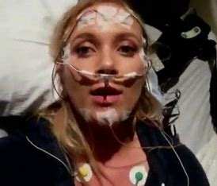
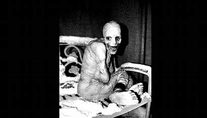

- FFI
- DEEP WEB
- Woonam Middle School
Woonam Middle School
Fatal Familial Insomnia
Introduction
Fatal familial insomnia (FFI) is a remarkably rare and invariably fatal inherited neurodegenerative prion disease. The
mode of inheritance of this disease is autosomal dominant and involves the mutation of the PRNP gene. Aggressively
progressive insomnia, with subsequent autonomic (tachycardia, hyperhidrosis, hypertension), cognitive (short-term
memory and attentional deficits), motor system (balance problems) and endocrine dysfunction are a hallmark of the
disease. The disease is currently incurable and has a mean course of 18 months, ultimately leading to death. The
earliest description of the disease dates back to 1765 with a report of an Italian gentleman having symptoms
suggestive of FFI.
The disease was formally identified and clinically described in 1986 by Lugaresi E. et al. followed by subsequent
studies further describing its pathophysiology, etiology, and clinical course.
Etiology
The cause of FFI has been identified as an autosomal dominant mutation at the codon 178 of the PRNP gene, located
on the short (p) arm of chromosome 20 at position p13 responsible for making the prion protein PrPC.
The disease-causing mutation consists of substitution from the normal aspartic acid (Asp) to asparagine (Asn).
Presence of methionine at codon 129 is distinct for FFI compared to valine at the same position in familial
Creutzfeldt-Jakob disease (fCJD). Furthermore, an aggressive form of the disease has been linked to the configuration
of the non-mutated allele (Met) at codon 129 of the disease-causing mutated gene. The more aggressive variant has
methionine (Met-Met) on the nonmutated allele compared to when it has valine (Met-Val).
